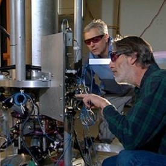

Recommended For You
- 1. 38 Free Open Source CSS Dropdown Navigation Menus 4 days ago spyrestudios.com spyrestudios.com SpyreStudios.com Jake Rocheleau CSS
- 2. Designing for Print 20 hours ago spyrestudios.com spyrestudios.com SpyreStudios.com noemi Design
- 3. Experiencing Psychosis with Digital LSD 6 months ago motherboard.vice.com Motherboard Motherboard.vice.com alejandro.tauber@vice.com (Alejandro Tauber) (sponsored) lsd
- 4.  New Atomic Clock Will Keep Ticking for 300M Years a month ago pcmag.com eCoustics eCoustics.com (sponsored)
- 5. This Is What It's Like When Galaxies Collide 3 months ago motherboard.vice.com Motherboard Motherboard.vice.com editor@motherboard.tv. (Amy Shira Teitel) (sponsored) research
-
6.
 White House Responds to ‘Deport Bieber’ Online Petition
3 weeks ago
pcmag.com
eCoustics
eCoustics.com
(sponsored)
News
White House Responds to ‘Deport Bieber’ Online Petition
3 weeks ago
pcmag.com
eCoustics
eCoustics.com
(sponsored)
News
- 7. There's a Forest Full of Bodies in Tennessee, and It's for Science a year ago motherboard.vice.com Motherboard Motherboard.vice.com derek@motherboard.tv (Derek Mead) (sponsored) science
- 8. Ditch Your Bulky Laptop Charger for a Dart 4 weeks ago pcmag.com eCoustics eCoustics.com (sponsored)